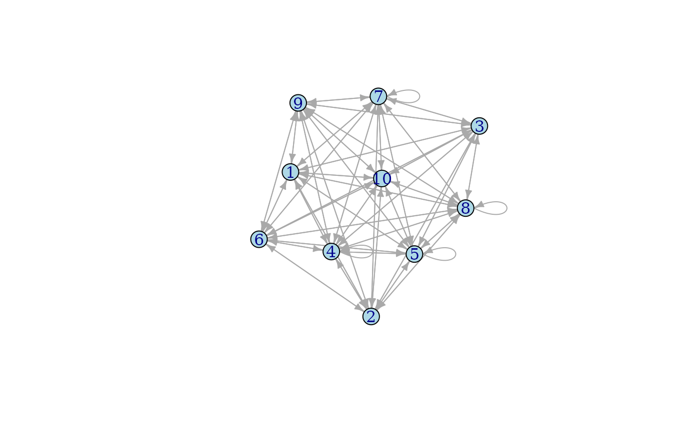

The functions in the ‘xtranat’ package are based on random walks. They compute Counting Betweenness and Random Walk Centrality. It also computes the intermediate measure Mean First Pass Time.
In metrics based on random walks, MFPT (mean first pass time) from node i to node j is the expected number of steps it takes for the process to reach node j from node i for the first time.
RWC (random walk centrality) of a node is the node’s inverse of MFPT (mean first pass time).
CB (counting betweenness) is a measure of a node’s involvement in the paths connecting other nodes. The more paths a node participates in, the more relevant as a connector (or conduit) in the network.
Applied to a random network with ten nodes and four randomly located loops. This is a dense, weigthed network.

|
Eigenvector Centrality (igraph) |
Random Walk Centrality (xtranat) |
Closeness Betwenness (igraph) |
Counting Betwenness (xtranat) |
|
|---|---|---|---|---|
| 1 | 0.3102 | 0.7570 | 0.4486 | 0.4407 |
| 2 | 0.5910 | 0.6622 | 0.1683 | 0.4375 |
| 3 | 0.5103 | 1.0000 | 0.2619 | 0.6784 |
| 4 | 0.3379 | 0.0528 | 0.4770 | 0.0000 |
| 5 | 0.4228 | 0.0365 | 0.2448 | 0.4284 |
| 6 | 0.2752 | 0.0000 | 0.0000 | 0.1341 |
| 7 | 0.7831 | 0.0240 | 1.0000 | 1.0000 |
| 8 | 0.3643 | 0.0366 | 0.8226 | 0.5412 |
| 9 | 1.0000 | 0.6665 | 0.5455 | 0.5601 |
| 10 | 0.0000 | 0.4820 | 0.4059 | 0.1408 |
We developed these metrics in DePaolis, F., Murphy, P. & De Paolis Kaluza, M.C. “Identifying key sectors in the regional economy: a network analysis approach using input–output data,” Appl Netw Sci 7, 86 (2022).Link. Some of the theoretical foundations are in Blöchl F, Theis FJ, Vega-Redondo F, and Fisher E. “Vertex Centrality in Input-Output Networks Reveal the Structure of Modern Economies,” Physical Review E 83(4):046127, 2011.Link